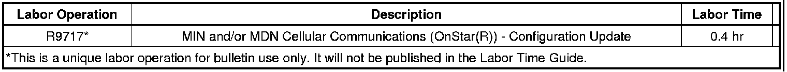
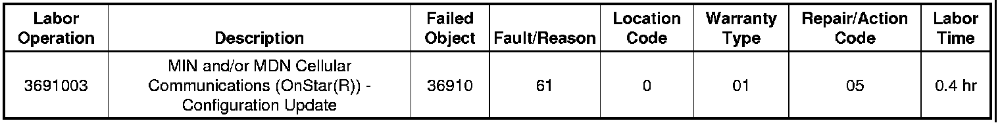

OnStar(R) - Number Incorrect/Incorrectly Assigned
INFORMATIONBulletin No.: 05-08-46-004C
Date: December 23, 2010
Subject: OnStar(R) Phone Number Concerns (Phone Number Incorrect/Assigned to Another Vehicle/Phone) That Occur During Diagnosis of OnStar(R) System
Models:
2000-2011 GM Passenger Cars and Trucks
Equipped with OnStar(R) (RPO UE1)
Supercede:
This bulletin is being revised to update model years up to 2011. Please discard Corporate Bulletin Number 05-08-46-004B (Section 08 - Body and Accessories).
During diagnosis of an OnStar(R) concern, the technician may be told that the OnStar(R) phone number is incorrect or tied to another vehicle and/or phone of some kind. To resolve these concerns, the Tech 2(R) with software version 22.005 (or higher), has the capability to change the OnStar(R) phone number.
Service Procedure
1. With the Tech 2(R), build the vehicle to specifications within the Diagnostics area of the Tech 2(R).
2. For vehicles with physical-based diagnostics - under Body, go to the OnStar(R) section. Then select the Special Functions menu.
For vehicles with functional-based diagnostics - under Body and Accessories, go to the Cellular Communication section. Select Module Setup and then Vehicle Communication Interface Module.
3. Locate the Program Phone Number prompt and select it. The original phone number will be displayed on the Tech 2(R) screen.
4. Contact the OnStar(R) team at the GM Technical Assistance Center (TAC) to obtain a new phone number.
5. Highlight the digits of the phone number one at a time and enter the new phone number using the number keys on the Tech 2(R).
6. Press the Soft key at the base of the screen for Done once these numbers have been changed on the screen.
7. Press the Soft key for Done again. The area code or new phone number has now been programmed into the phone.
8. Cycle the ignition to Off and open the driver's door.
9. Press the blue OnStar(R) button to make sure that a normal connection can be made to the OnStar(R) call center. If applicable, make sure the Hands-Free Calling (HFC) works properly by making a phone call.
10. If the system is working properly, fax or voicemail a case closing into the OnStar(R) team at TAC with the results. Dealers in Canada should submit case closing information through the GM infoNET.
Please follow this diagnostic process thoroughly and complete each step. If the condition exhibited is resolved WITHOUT completing every step, the remaining steps do not need to be performed. If the procedure above does not resolve the condition, you must contact TAC for further assistance. This diagnostic approach was developed specifically for this condition and should not automatically be used for other vehicles with similar symptoms.
Warranty Information (excluding Saab Models)
For vehicles repaired under warranty, use:

Warranty Information (Saab Models)

For vehicles repaired under warranty, use the table.

Disclaimer